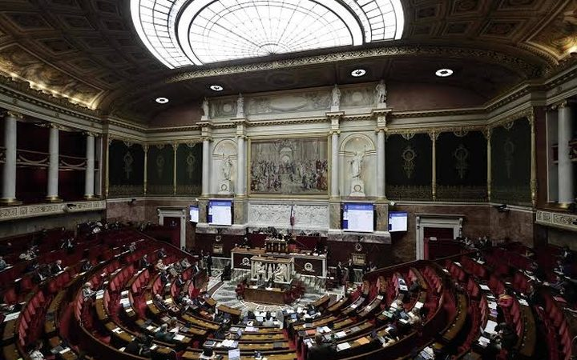
Aposentados na França: o Senado mantém o abatimento de 10% no imposto, mas reduz o teto para 1.000 euros por famíliaRetraités : le Sénat maintient l'abattement fiscal de 10 %, mais abaisse son plafond à 1 000 euros par foyerRetirees in France: the Senate keeps the 10% tax allowance on pensions but cuts its cap to 1,000 euros per household
26 NOV 2026 · Silvania Batista
Crédito imobiliário na França: taxas sobem em todas as durações e o empréstimo de 25 anos chega perto de 3,85%Crédit immobilier : les taux montent sur toutes les durées et le prêt sur 25 ans approche 3,85 %Mortgages in France: rates rise across all terms and 25-year loans near 3.85%
25 NOV 2026 · Silvania Batista

Preço dos imóveis antigos volta a cair na França: menos 0,3% no trimestre e menos 1,2% em um ano, com a Île-de-France na frenteLes prix des logements anciens reculent encore : moins 0,3 % sur le trimestre et moins 1,2 % sur un an, l'Île-de-France en têteFrench resale home prices fall again: down 0.3% in the quarter and 1.2% over a year, led by the Paris region
25 NOV 2026 · Silvania Batista

Black Friday em 27 de novembro: o desconto tem de ser real, o parcelamento agora é crédito e os golpes têm onde ser denunciadosBlack Friday le 27 novembre : la réduction doit être réelle, le paiement fractionné devient un crédit et les arnaques se signalentBlack Friday on 27 November: the discount must be real, split payments now count as credit and scams can be reported
23 NOV 2026 · Anne Lopes
Pagar em 3 ou 4 vezes agora é crédito: as novas regras do crédito ao consumo na França desde 20 de novembroPayer en 3 ou 4 fois devient un crédit : les nouvelles règles du crédit à la consommation depuis le 20 novembrePaying in 3 or 4 instalments is now credit: France's new consumer credit rules since 20 November
22 NOV 2026 · Silvania Batista
Gás fica 5,8% mais caro em dezembro para quem tem contrato indexadoLe gaz augmente de 5,8 % en décembre pour les contrats indexésGas up 5.8% in December for households on indexed contracts
13 NOV 2026 · Anne Lopes
Economia francesa perde fôlego: Moody's prevê só 0,2% de crescimento em 2026L'économie française s'essouffle : Moody's ne prévoit plus que 0,2 % de croissance en 2026French economy runs out of steam: Moody's now sees just 0.2% growth in 2026
13 NOV 2026 · Silvania Batista
Aposentado que volta a trabalhar: as regras do cumul emploi-retraite mudam em 1º de janeiro de 2027Retraité qui reprend un emploi : les règles du cumul emploi-retraite changent le 1er janvier 2027Retiring and working at the same time: France's cumul emploi-retraite rules change on 1 January 2027
13 NOV 2026 · Silvania Batista
Imóvel vazio na França: a partir de 2027, um imposto único substitui as duas taxas atuais, com alíquota de 17% a 34% nas zonas tensasLogement vacant : dès 2027, une taxe unique remplace la TLV et la THLV, au taux de 17 % puis 34 % en zone tendueEmpty homes in France: from 2027 a single tax replaces the two current levies, at 17% then 34% in high-demand areas
6 NOV 2026 · Anne Lopes
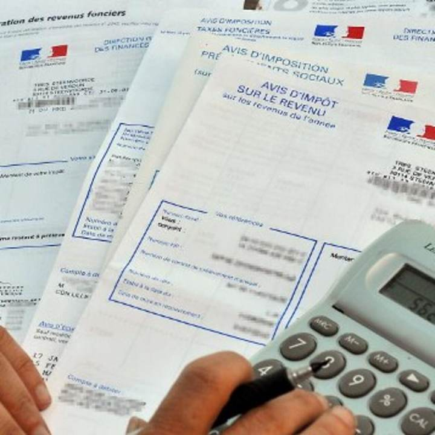
CFE 2026: o aviso da taxa das empresas já está no site dos impostos, e o pagamento vence em 15 de dezembroCFE 2026 : l'avis est en ligne sur impots.gouv.fr, et le paiement est à faire avant le 15 décembreCFE 2026: the business property tax notice is now online, and payment is due by 15 December
6 NOV 2026 · Silvania Batista
Caiu num golpe e o banco diz que a culpa é sua? A Justiça europeia decidiu que ele tem de devolver o dinheiro primeiroVictime d'une arnaque et votre banque vous accuse de négligence ? La justice européenne impose de rembourser d'abordScammed, and your bank says it is your fault? The EU Court of Justice says it must refund you first
6 NOV 2026 · Anne Lopes
Poupança salarial: deputados examinam na terça o resgate antecipado de até 5 mil euros, aprovado pelo SenadoÉpargne salariale : les députés examinent mardi le déblocage exceptionnel jusqu'à 5 000 euros voté par le SénatEmployee savings: French MPs examine on Tuesday a one-off early withdrawal of up to 5,000 euros passed by the Senate
6 NOV 2026 · Anne Lopes
Crédito imobiliário na França: juros sobem de novo em novembro e passam de 4% para quem ganha menosCrédit immobilier : les taux remontent en novembre et dépassent 4 % pour les ménages aux revenus modestesFrench mortgages: rates rise again in November and top 4% for lower-income households
3 NOV 2026 · Silvania Batista
Inflação na França sobe para 3,4% em outubro, puxada pela energia: o que esse número muda no seu bolsoL'inflation en France monte à 3,4 % en octobre, tirée par l'énergie : ce que ce chiffre change pour votre budgetFrench inflation rises to 3.4% in October, driven by energy: what the figure means for your budget
30 OUT 2026 · Silvania Batista
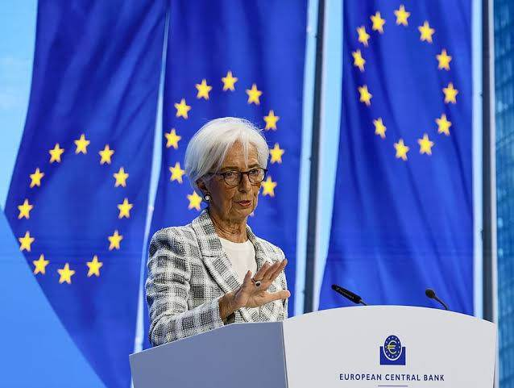
O BCE mantém os juros em 2,5% e Christine Lagarde anuncia que deixa o banco em 7 de fevereiro, nove meses antes do fim do mandatoLa BCE maintient ses taux à 2,5 % et Christine Lagarde annonce qu'elle quittera la banque le 7 février, neuf mois avant la fin de son mandatThe ECB holds rates at 2.5% and Christine Lagarde announces she will leave the bank on 7 February, nine months before her term ends
30 OUT 2026 · Silvania Batista
Quanto é preciso ganhar para viver com folga na Europa: na França, cerca de 3.300 euros líquidos por mês para uma pessoa sozinhaCombien faut-il gagner pour vivre à l'aise en Europe : en France, environ 3 300 euros nets par mois pour une personne seuleHow much you need to earn to live comfortably in Europe: in France, about 3,300 euros net a month for a single person
28 OUT 2026 · Anne Lopes
Casas mais baratas, apartamentos estáveis: o que a nota dos notários de outubro diz a quem quer comprar na FrançaMaisons en baisse, appartements stables : ce que la note des notaires d'octobre dit à ceux qui veulent acheter en FranceCheaper houses, steady flats: what the notaries' October note tells would-be buyers in France
28 OUT 2026 · Silvania Batista

Chase fecha contas de americanos que vivem na França: o que a regra europeia CRD VI muda para quem tem banco fora da UEChase ferme les comptes d'Américains vivant en France : ce que la règle européenne CRD VI change pour les clients de banques hors UEChase closes accounts of Americans living in France: what the EU CRD VI rule changes for customers of non-EU banks
28 OUT 2026 · Silvania Batista
O gás europeu chega ao maior preço desde 2022: o que isso significa para a sua conta na FrançaLe gaz européen atteint son plus haut niveau depuis 2022 : ce que cela signifie pour votre facture en FranceEuropean gas hits its highest price since 2022: what it means for your bill in France
28 OUT 2026 · Anne Lopes
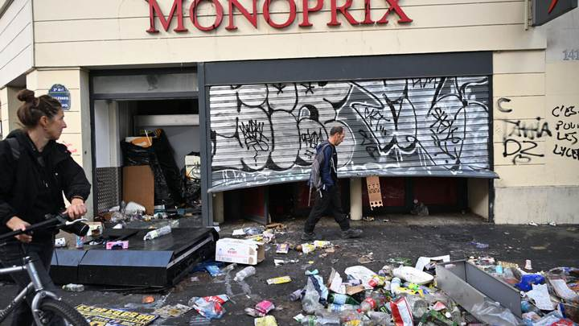
Comércio saqueado ou fechado por ordem da préfecture: o Estado paga 100% do chômage partiel nas empresas com menos de 250 funcionáriosCommerce pillé ou fermé sur décision préfectorale : l'État prend en charge 100 % de l'activité partielle dans les entreprises de moins de 250 salariésShop looted or closed by prefecture order: the State covers 100% of short-time work in businesses with fewer than 250 staff
22 OUT 2026 · Silvania Batista
Tarifas bancárias de 2027: bancos sobem a manutenção de conta, e o cliente tem dois meses para reagirFrais bancaires 2027 : des banques augmentent la tenue de compte, et le client a deux mois pour réagir2027 bank fees: banks raise account-keeping charges, and customers have two months to react
22 OUT 2026 · Silvania Batista
Diesel: Macron garante cargas no Golfo e o governo promete a baixa na bomba para 1º de novembroGazole : Macron sécurise des cargaisons dans le Golfe et le gouvernement promet la baisse à la pompe pour le 1er novembreDiesel: Macron secures Gulf cargoes and the government promises lower pump prices from 1 November
21 OUT 2026 · La rédaction
Plafond da Sécurité sociale 2027: 4.075 euros por mês, e por que esse número mexe com o seu bolsoPlafond de la Sécurité sociale 2027 : 4 075 euros par mois, et pourquoi ce chiffre touche votre portefeuille2027 Social Security ceiling: 4,075 euros a month, and why this number affects your wallet
20 OUT 2026 · La rédaction
Um crédito sem juros para quem espera um bebê: o que é o "PTZ parentalidade" do orçamento 2027Un prêt sans intérêts pour ceux qui attendent un bébé : ce qu'est le « PTZ parentalité » du budget 2027An interest-free loan for parents-to-be: what the 2027 budget's "parenthood PTZ" is
19 OUT 2026 · La rédaction
Doação em dinheiro aos filhos: o orçamento de 2027 propõe até 150 mil euros sem imposto, por seis mesesDon d'argent aux enfants : le budget 2027 propose jusqu'à 150 000 euros sans impôt, pendant six moisCash gifts to children: the 2027 budget proposes up to 150,000 euros tax-free, for six months
19 OUT 2026 · La rédaction
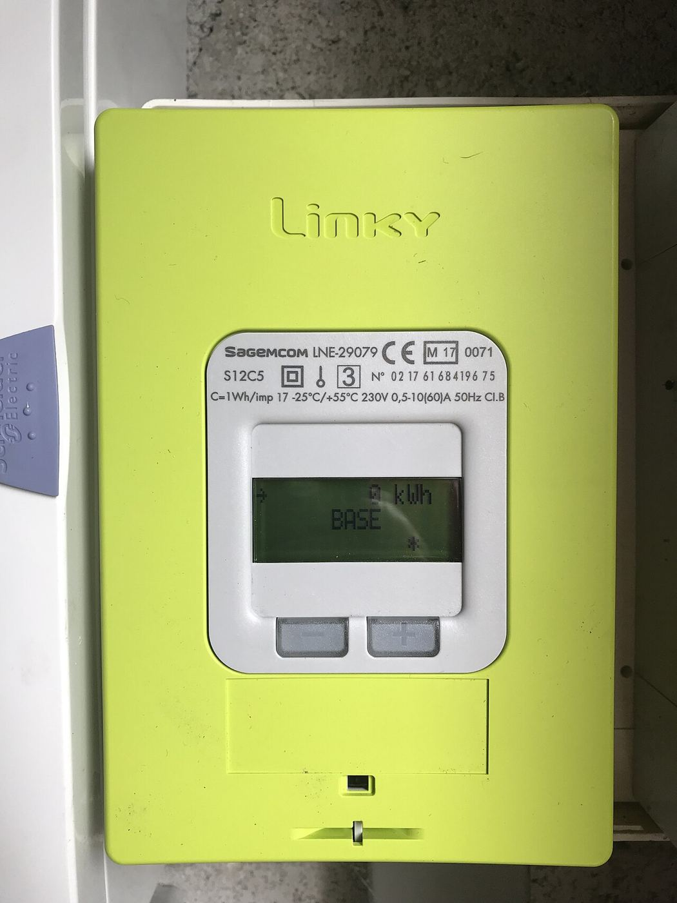
Heures creuses: a partir de 4 de novembro, os horários da eletricidade mais barata mudam para milhões de lares na FrançaHeures creuses : à partir du 4 novembre, les horaires de l'électricité moins chère changent pour des millions de foyers en FranceOff-peak hours: from 4 November, the cheaper-electricity times change for millions of households in France
19 OUT 2026 · La rédaction
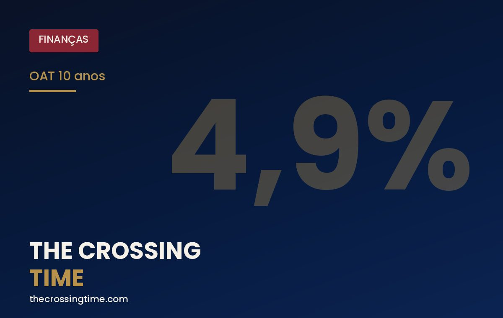
A França paga quase 5% para pegar dinheiro emprestado: o que isso muda na sua poupança e no seu créditoLa France emprunte à près de 5 % : ce que cela change pour votre épargne et votre créditFrance is borrowing at nearly 5%: what it means for your savings and your loan
18 OUT 2026 · La rédaction
Bomba de calor: a prima “coup de pouce chauffage” agora só vale para modelos aprovados pelo Estado e montados na EuropaPompe à chaleur : la prime « coup de pouce chauffage » ne vaut plus que pour des modèles agréés par l'État et assemblés en EuropeHeat pumps: the “coup de pouce chauffage” grant now only covers State-approved models assembled in Europe
17 OUT 2026 · La rédaction
Crédito imobiliário na França: os juros passam de 3,5% em outubro e a capacidade de compra encolheCrédit immobilier en France : les taux dépassent 3,5 % en octobre et la capacité d'achat se réduitMortgages in France: rates pass 3.5% in October and buying power shrinks
17 OUT 2026 · La rédaction
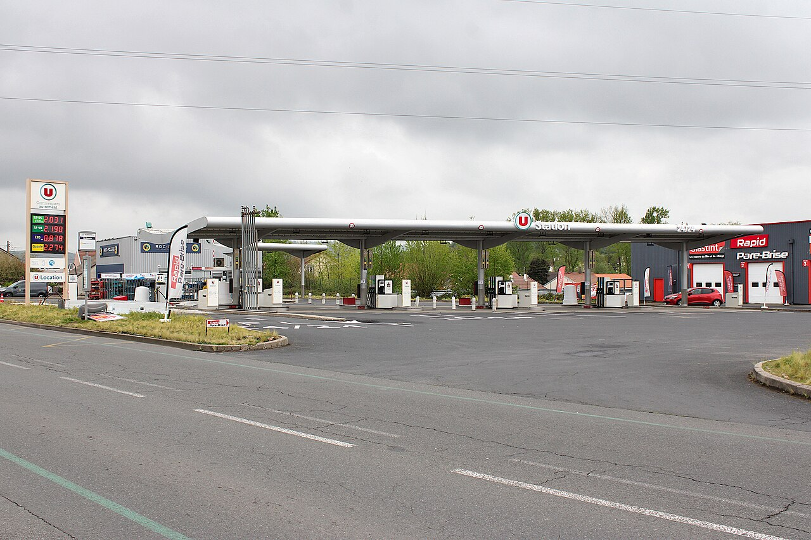
Ajuda de 100 euros para quem roda muito para trabalhar: o decreto saiu, o teto de renda subiu e o formulário abre em 27 de outubroAide de 100 euros pour les grands rouleurs : le décret est paru, le plafond de revenus monte et le formulaire ouvre le 27 octobreA 100-euro payment for people who drive a lot for work: the decree is out, the income ceiling is higher and the form opens on 27 October
17 OUT 2026 · La rédaction
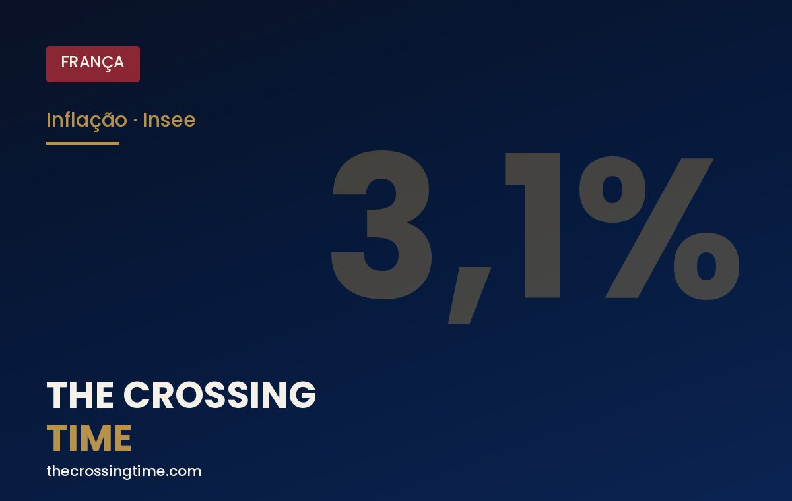
A inflação na França chega a 3,1% em setembro, puxada pela energia: o que isso pesa no seu bolsoL'inflation en France atteint 3,1 % en septembre, tirée par l'énergie : ce que cela pèse sur votre budgetInflation in France reaches 3.1% in September, driven by energy: what it means for your wallet
16 OUT 2026 · La rédaction
O euro cai ao menor nível em quase um ano e meio frente ao dólar: o que explica a queda e o que ela muda no seu bolsoL'euro tombe à son plus bas depuis près d'un an et demi face au dollar : ce qui explique la chute et ce qu'elle change pour votre portefeuilleThe euro falls to its lowest in almost a year and a half against the dollar: what explains the drop and what it means for your wallet
15 OUT 2026 · La rédaction
O gás sobe de novo em 1º de novembro: +6,6%, a terceira alta seguida deste outonoLe gaz augmente encore le 1er novembre : +6,6 %, troisième hausse d'affilée cet automneGas goes up again on 1 November: +6.6%, the third rise in a row this autumn
14 OUT 2026 · La rédaction
Cinco meses de acordo Mercosul-UE: as exportações do Brasil para a Europa sobem 30,7%, segundo o governoCinq mois d'accord Mercosur-UE : les exportations du Brésil vers l'Europe bondissent de 30,7 %, selon le gouvernementFive months into the EU-Mercosur deal: Brazil's exports to Europe up 30.7%, the government says
14 OUT 2026 · La rédaction
Poupança e imposto na França: o que a Cour des comptes realmente propôs, e o que não mudouÉpargne et fiscalité : ce que la Cour des comptes a réellement proposé, et ce qui n'a pas changéSavings and tax in France: what the Cour des comptes actually proposed, and what has not changed
13 OUT 2026 · La rédaction
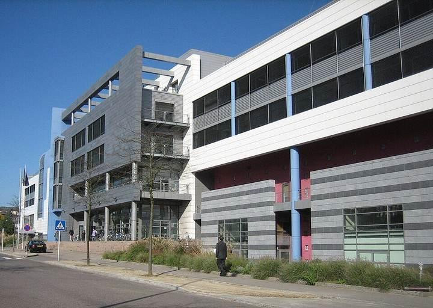
Aluguéis na Europa: onde a conta pesa mais, e onde a França aparece no mapaLoyers en Europe : où la facture pèse le plus, et où se situe la FranceRents in Europe: where the bill bites hardest, and where France sits on the map
13 OUT 2026 · La rédaction
Imposto de renda na França: a parcela de 26 de outubroImpôt sur le revenu : l'échéance du 26 octobreFrench income tax: the 26 October instalment
6 OUT 2026 · La rédaction
Orçamento 2027: pensões congeladas, abatimento menor e o que muda para quem é estrangeiroBudget 2027 : pensions gelées, abattement réduit et ce qui change pour les étrangers2027 budget: frozen pensions, a smaller allowance and what changes for foreigners
5 OUT 2026 · La rédaction
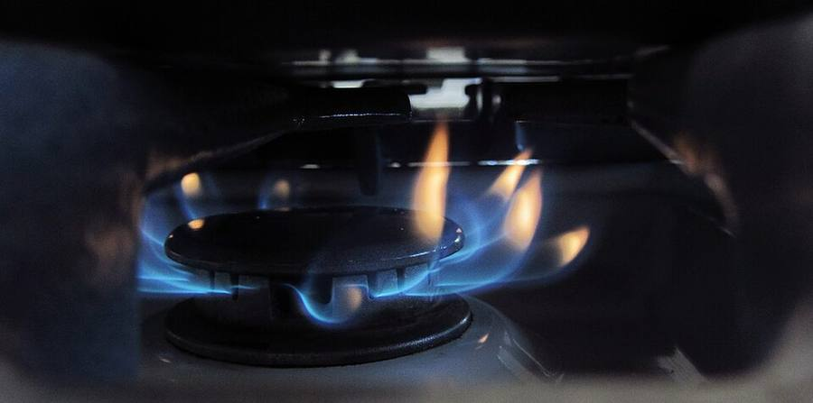
O gás sobe 6,3% em 1º de outubro: quem paga mais, quanto e o que dá para fazerLe gaz augmente de 6,3% au 1er octobre : qui paie plus, combien, et que faireGas rises 6.3% on 1 October: who pays more, how much, and what you can do
30 SET 2026 · La rédaction
Choose Outre-mer: Paris coloca os territórios ultramarinos na vitrine dos investidoresChoose Outre-mer : Paris met les territoires ultramarins dans la vitrine des investisseursChoose Outre-mer: Paris puts the overseas territories in the investors' shop window
29 SET 2026 · Yan Lopes
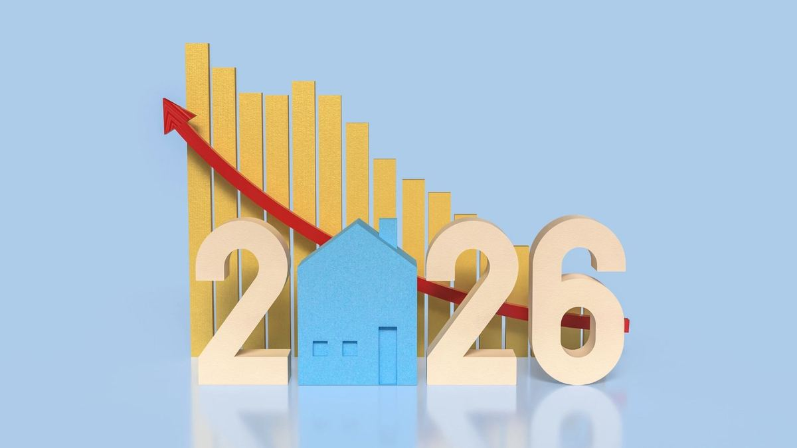
Preços dos imóveis na França caem de novo em 2026, mas o mapa é desigualLes prix de l'immobilier en France rebaissent en 2026, mais la carte est inégaleFrench property prices fall again in 2026, but the map is uneven
27 SET 2026 · La rédaction
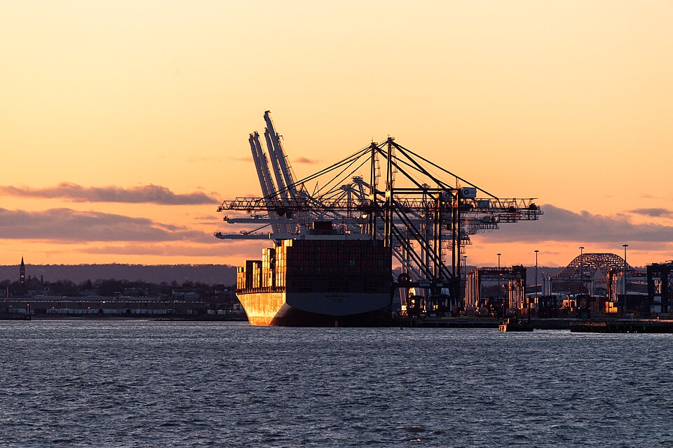
A UE pressiona a China por quotas de importação, e a fatura pode chegar ao seu bolsoL'UE pousse la Chine à accepter des quotas d'importation, et la facture peut arriver dans votre porte-monnaieThe EU pushes China to accept import quotas, and the bill may reach your wallet
28 SET 2026 · La rédaction
O que conta como "Made in Europe"? França, Alemanha e Espanha não se entendemQu'est-ce qui compte comme « Made in Europe » ? France, Allemagne et Espagne ne s'accordent pasWhat counts as "Made in Europe"? France, Germany and Spain cannot agree
25 SET 2026 · La rédaction
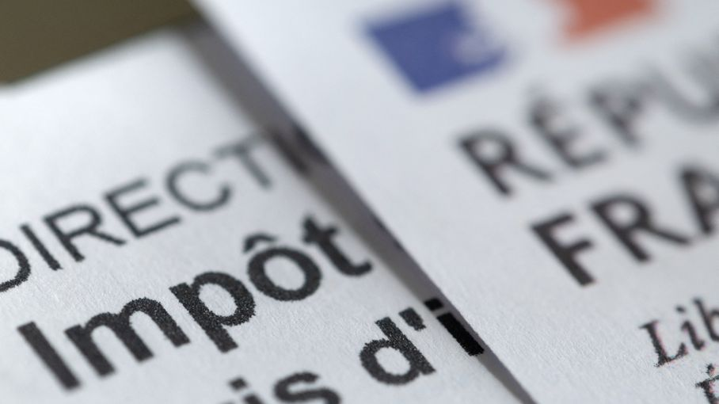
"Super-heranças": a Oxfam quer pôr um teto no benefício fiscal que poupa bilhões às maiores fortunas da França« Super-héritages » : Oxfam veut plafonner l'avantage fiscal qui épargne des milliards aux plus grandes fortunes de France"Super-inheritances": Oxfam wants a cap on the tax break that saves billions for France's largest fortunes
23 SET 2026 · 6 MIN · PT/FR/EN · La rédaction
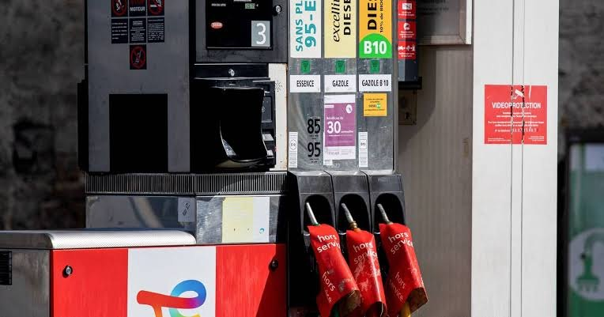
Diesel bate recorde e um posto em cada seis fica sem combustível na FrançaLe diesel bat un record et une station sur six se retrouve à sec en FranceDiesel hits a record and one station in six runs out of fuel in France
22 SET 2026 · 6 MIN · PT/FR/EN · La rédaction
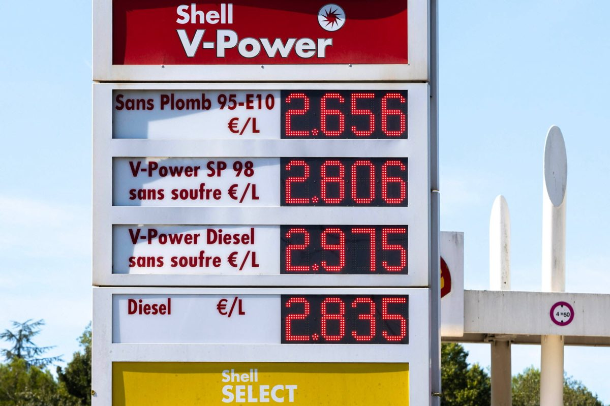
O ano em branco: Lecornu quer economizar €54 bilhões, e isso chega ao seu bolsoL'année blanche : Lecornu veut économiser 54 milliards d'euros, et cela touche votre porte-monnaieThe blank year: Lecornu wants to save €54 billion, and it reaches your wallet
19 SET 2026 · 6 MIN · PT/FR · La rédaction
O Brasil corta os juros para 13,75%: o que isso muda para quem vive na EuropaLe Brésil abaisse ses taux à 13,75% : ce que cela change pour qui vit en EuropeBrazil cuts interest rates to 13.75%: what it changes for those living in Europe
18 SET 2026 · 6 MIN · PT/FR · La rédaction
A França esfria: crescimento cortado à metade e a meta de déficit fica pelo caminhoLa France ralentit : croissance divisée et objectif de déficit abandonnéFrance cools: growth halved and the deficit target slips away
15 SET 2026 · 6 MIN · PT/FR ·
Morre o homem mais rico da Alemanha — e sua fortuna inteira vira uma das maiores fundações da EuropaL'homme le plus riche d'Allemagne s'éteint — et toute sa fortune devient l'une des plus grandes fondations d'EuropeGermany's richest man dies — and his entire fortune becomes one of Europe's largest foundations
4 SET 2026 ·
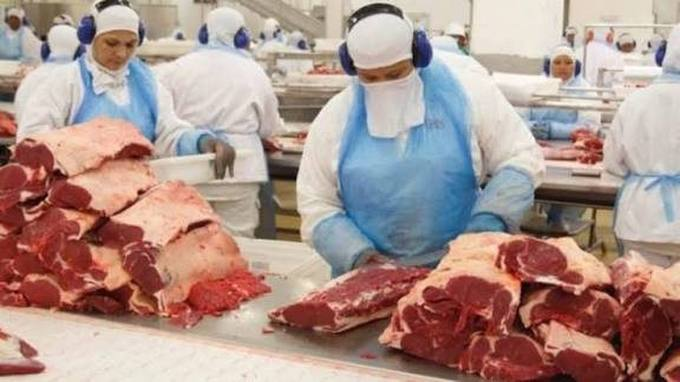
A partir de hoje, a UE fecha a porta à carne brasileira — e o motivo não é contaminaçãoÀ partir d'aujourd'hui, l'UE ferme sa porte à la viande brésilienne — et la raison n'est pas la contaminationStarting today, the EU closes the door to Brazilian beef — and the reason isn't contamination
3 SET 2026 ·
A energia volta a puxar os preços: inflação da zona euro sobe a 3,3% em agostoL'énergie fait de nouveau grimper les prix : l'inflation de la zone euro monte à 3,3 % en aoûtEnergy drives prices up again: eurozone inflation rises to 3.3% in August
2 SET 2026 ·
Mercados mundiais despencam com a guerra EUA-Irã, o petróleo e os jurosLes marchés mondiaux plongent avec la guerre USA-Iran, le pétrole et les tauxGlobal markets tumble amid the US-Iran war, oil, and interest rates
2 SET 2026 ·
CRD6: a lei bancária europeia que pode mexer com a sua conta no BrasilCRD6 : la loi bancaire européenne qui peut toucher votre compte au BrésilCRD6: the European banking law that could affect your account in Brazil
26 AGO 2026 ·
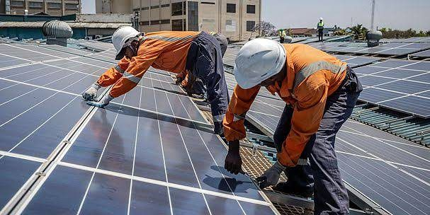
Calor faz eletricidade disparar mais de 20% na Europa e expõe vulnerabilidade energéticaLa chaleur fait bondir l'électricité de plus de 20 % en Europe et révèle une vulnérabilité énergétiqueHeat drives electricity up more than 20% in Europe and exposes energy vulnerability
12 AGO 2026 · 6 MIN · PT/FR ·